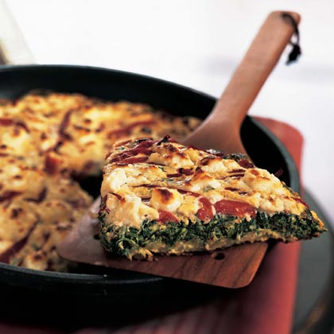
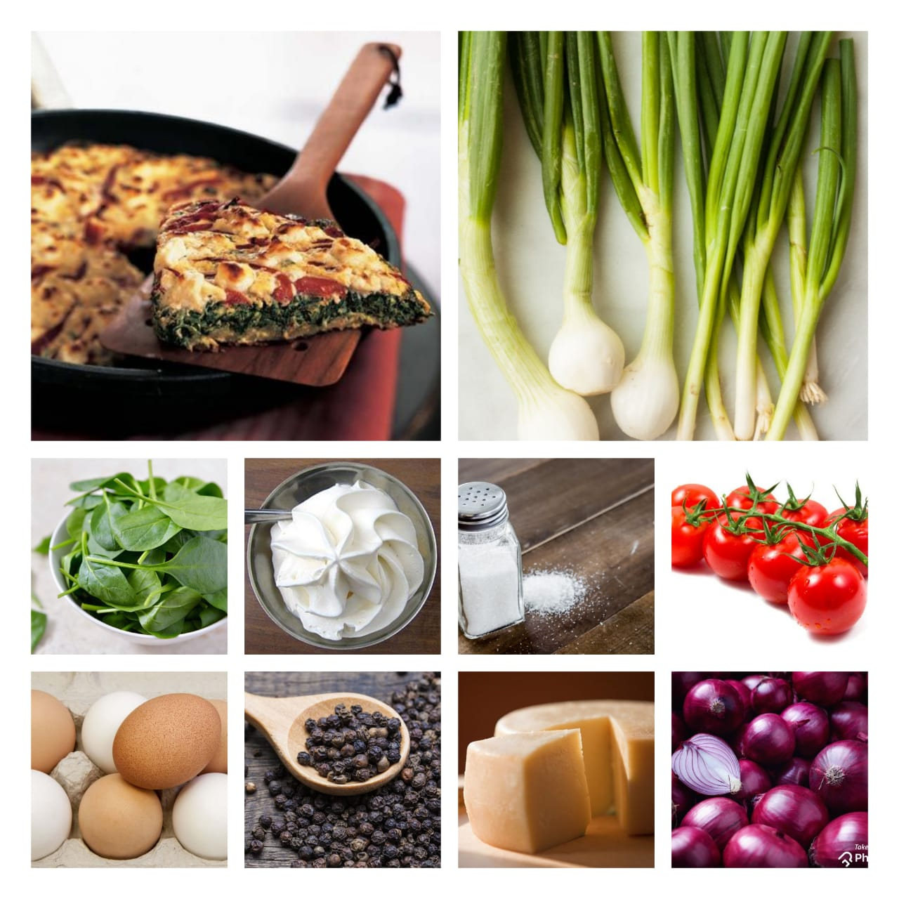

Florentine
Home
Frittata is an Italian open-faced omelet that features a mixture of eggs and dairy and highlights a variety of other ingredients like meat, cheese, and vegetables. Think of frittata as a crustless, low-carb quiche I love to serve this fancy egg dish for brunch or on special occasions. It is packed with savoury flavours and its vivid colours set a bright festive mood for your meal. What makes a frittata different from an omelette is the way it is cooked. A frittata is cooked from the bottom first on the stove then the cooking source is changed to the top as you finish cooking it under the broiler. This means that no awkward flipping is required, and the ingredients will all stay set in place.

Ingredients
6 eggs
½ cup heavy cream
1 teaspoon salt
½ teaspoon black pepper
4 strips of bacon, diced
1 cup onion, diced
½ cup tomatoes, diced
4 cups spinach
½ cup cheese, shredded
Green onions

Nutrition Facts
calories 410
Total Fat 21g
Cholestero 45mg
Sodium 1656mg
Total Carbohydrate 17g
Vitamin C 0%
vitamin A %
Procedure
Preheat oven to 350°F/180°C.In a large bowl, whisk the eggs, heavy cream, salt, and pepper, and set aside.
In an oven-safe pan, cook bacon. Once fully cooked, take out the bacon and set aside. Add onions to the same pan and cook until translucent.
Add tomatoes and spinach ,and cook for a couple minutes until spinach is slightly wilted.
Add the bacon back into the pan. Blend together.
Add the eggs and cheese into the pan.
Give it a good stir, then bake for 15 minutes, or until the eggs do not jiggle in the middle. Top off with green onions, if desired, and enjoy!
Expert Guide
Back ←
Scroll to Top ↑